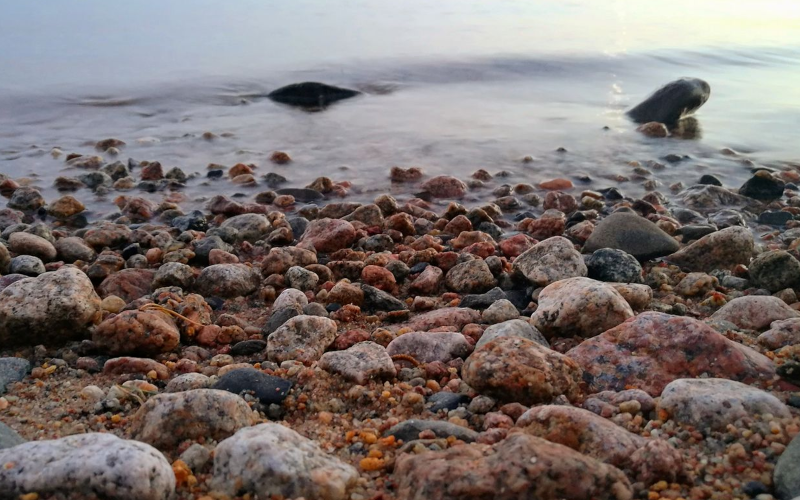
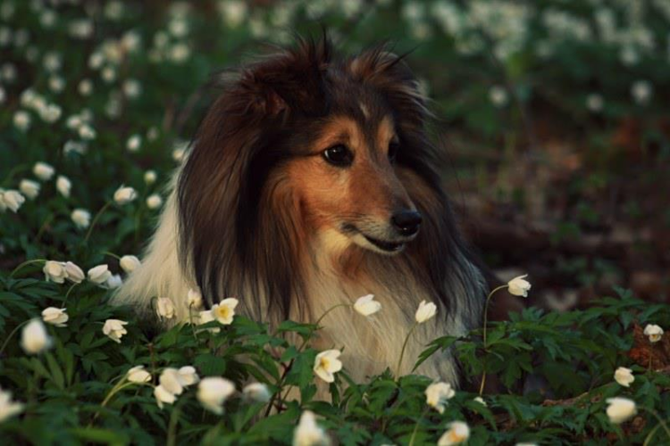
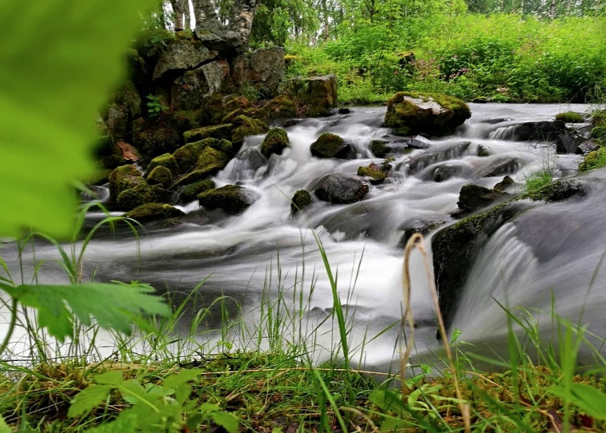
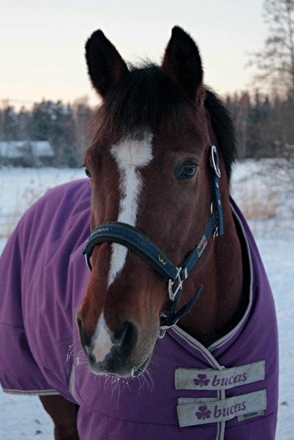
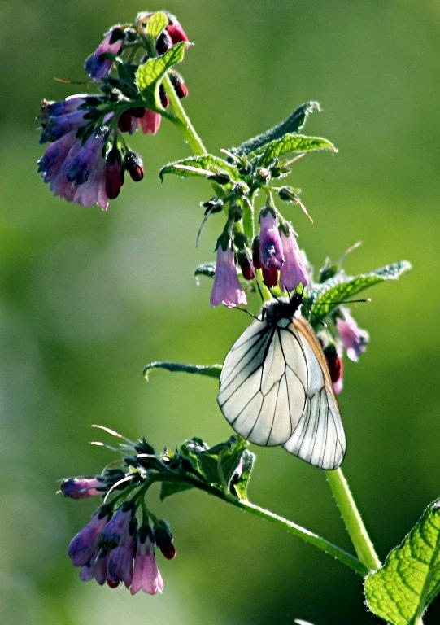

Sain ensimmäisen ikioman järjestelmäkameran yläasteikäisenä vuonna 2011. Toiveena kamera oli ollut jo pitkään, sillä hevosharrastus vei tällöin mukanaan ja kaikki piti saada taltioitua. Ensimmäinen kamerani oli Canon EOS55d, joka minulta löytyy vielä tänäkin päivänä. Valokuvaus on opettanut sinnikkyyttä oppia paremmaksi ja kehittämään "jotain omaa", jotta erottuisin valtavirrasta. Nykyään kuvaan lähinnä puhelimen laadukkaalla kameralla, sillä kameran runko objektiiveineen on melko loppuun ajettu. Alta löytyy muutamia otoksia.
    
Tietokoneisiin sain ensikosketuksen ennen kuin opin edes lukemaan, ja kiinnostus tietotekniikkaan on kasvanut ajan myötä myös pelien ulkopuolelle. Opettelin vuosia taaksepäin mm. HTML-kielen sekä CSS-tyylimuotoilun alkeita muokkaamalla valmiita koodipohjia luoden omia verkkosivuja ja viimeaikoina taidot ovat kasvaneet pelkän muokkaamisen yli. Olen löytänyt itseni myös päivittämässä pöytäkonettani -tämä on jotakin sellaista mitä en olisi koskaan uskonut tekeväni itse.
Rakastan hyvää ruokaa ja minut todennäkoisesti löytää erinomaisen ruuan lähettyviltä, oli se sitten omaa aikaansaannosta tai muiden. Tämä ajatusmaailma on minut tuonut nykyisen ammattini pariin, mutta vapaa-ajalla harrastaminen tuo vapautta omaan tekemiseen. Olen mitä luultavimmin se, joka palavereihin tuo uunituoreet korvapuustit sekä järjestää yrityksen työnhyvinvointipäivän, sillä maistuva eväs luo mukavan ilmapiirin.